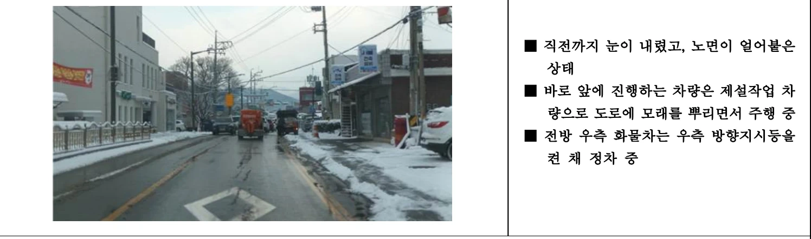

686. Which of the following pairings of information from the given situation and appropriate driving methods are incorrect? (Select TWO)

- ①A crosswalk sign – Drive carefully as there is a crosswalk ahead.
- ②A section marked with double solid yellow lines on the right side of the lane – Stopping across the sidewalk is permitted.
- ③Frozen road surface – Drive at a speed reduced to 20% of the speed limit.
- ④A snow removal vehicle ahead – Drive while maintaining a safe distance from the snow removal vehicle.
- ⑤A truck stopped on the right side ahead - Drive with caution as pedestrians may unexpectedly come out to the driveway.
Show answer
Answer
② A section marked with double solid yellow lines on the right side of the lane – Stopping across the sidewalk is permitted.
③ Frozen road surface – Drive at a speed reduced to 20% of the speed limit.
Reference
The double yellow line is a no stopping or parking sign (Road Traffic Act Enforcement Rules [Appendix 6] Serial No. 516-2). In addition, stopping and parking on sidewalks are prohibited (Article 32, Paragraph 1 of the Road Traffic Act). If the road surface is icy, you must drive at a speed reduced by 50/100 of the maximum speed (Road Traffic Act Enforcement Rules, Article 19, Paragraph 2, Item 2, Item B). If the road surface is wet due to rain or less than 20 millimeters of snow has accumulated, the vehicle must be driven at a speed reduced by 20/100 of the maximum speed (Article 19, Paragraph 2, Item 1 of the Enforcement Rules of the Road Traffic Act).
Reference text is a machine translation for study.